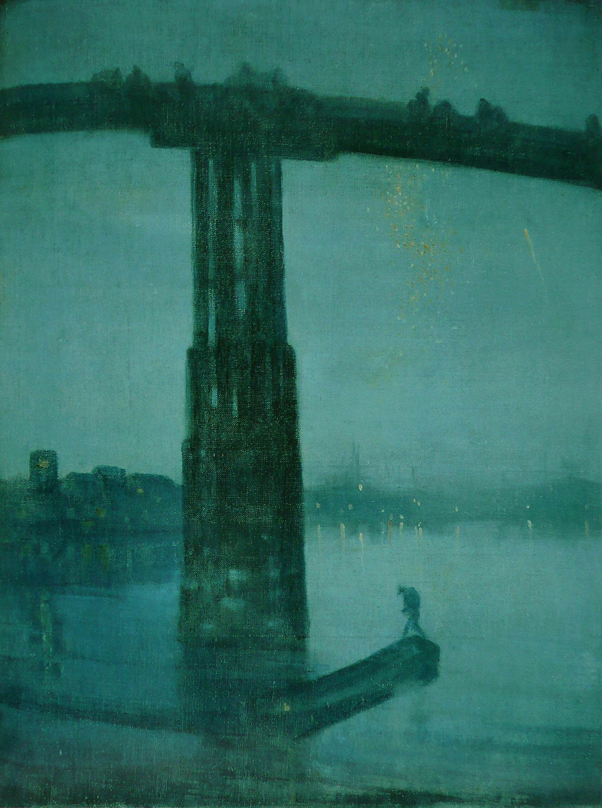

← 目次“... No, it is impossible; it is impossible to convey the life-sensation of any given epoch of one’s existence—that which makes its truth, its meaning—its subtle and penetrating essence. It is impossible. We live, as we dream—alone....”
No, it is impossible; it is impossible to convey the life-sensation of any given epoch of one’s existence—that which makes its truth, its meaning—its subtle and penetrating essence. It is impossible. We live, as we dream—alone....
He paused again as if reflecting, then added:
“Of course in this you fellows see more than I could then. You see me, whom you know....”
It had become so pitch dark that we listeners could hardly see one another. For a long time already he, sitting apart, had been no more to us than a voice. There was not a word from anybody. The others might have been asleep, but I was awake. I listened, I listened on the watch for the sentence, for the word, that would give me the clue to the faint uneasiness inspired by this narrative that seemed to shape itself without human lips in the heavy night-air of the river.
For a long time already he, sitting apart, had been no more to us than a voice. There was not a word from anybody.
J. A. Grimshaw, Thames Moonlight／Public domain／Commons
“... Yes—I let him run on,” Marlow began again, “and think what he pleased about the powers that were behind me. I did! And there was nothing behind me! There was nothing but that wretched, old, mangled steamboat I was leaning against, while he talked fluently about ‘the necessity for every man to get on.’ ‘And when one comes out here, you conceive, it is not to gaze at the moon.’ Mr. Kurtz was a ‘universal genius,’ but even a genius would find it easier to work with ‘adequate tools—intelligent men.’ He did not make bricks—why, there was a physical impossibility in the way—as I was well aware; and if he did secretarial work for the manager, it was because ‘no sensible man rejects wantonly the confidence of his superiors.’ Did I see it? I saw it. What more did I want?
What I really wanted was rivets, by heaven! Rivets. To get on with the work—to stop the hole. Rivets I wanted. There were cases of them down at the coast—cases—piled up—burst—split! You kicked a loose rivet at every second step in that station-yard on the hillside. Rivets had rolled into the grove of death. You could fill your pockets with rivets for the trouble of stooping down—and there wasn’t one rivet to be found where it was wanted. We had plates that would do, but nothing to fasten them with. And every week the messenger, a long negro, letter-bag on shoulder and staff in hand, left our station for the coast. And several times a week a coast caravan came in with trade goods—ghastly glazed calico that made you shudder only to look at it, glass beads value about a penny a quart, confounded spotted cotton handkerchiefs. And no rivets. Three carriers could have brought all that was wanted to set that steamboat afloat.
What I really wanted was rivets, by heaven! Rivets. To get on with the work—to stop the hole. Rivets I wanted.
“He was becoming confidential now, but I fancy my unresponsive attitude must have exasperated him at last, for he judged it necessary to inform me he feared neither God nor devil, let alone any mere man. I said I could see that very well, but what I wanted was a certain quantity of rivets—and rivets were what really Mr. Kurtz wanted, if he had only known it. Now letters went to the coast every week.... ‘My dear sir,’ he cried, ‘I write from dictation.’ I demanded rivets. There was a way—for an intelligent man. He changed his manner; became very cold, and suddenly began to talk about a hippopotamus; wondered whether sleeping on board the steamer (I stuck to my salvage night and day) I wasn’t disturbed. There was an old hippo that had the bad habit of getting out on the bank and roaming at night over the station grounds. The pilgrims used to turn out in a body and empty every rifle they could lay hands on at him. Some even had sat up o’ nights for him. All this energy was wasted, though. ‘That animal has a charmed life,’ he said; ‘but you can say this only of brutes in this country. No man—you apprehend me?—no man here bears a charmed life.’ He stood there for a moment in the moonlight with his delicate hooked nose set a little askew, and his mica eyes glittering without a wink, then, with a curt Good-night, he strode off. I could see he was disturbed and considerably puzzled, which made me feel more hopeful than I had been for days.
‘That animal has a charmed life,’ he said; ‘but you can say this only of brutes in this country. No man—you apprehend me?—no man here bears a charmed life.’
It was a great comfort to turn from that chap to my influential friend, the battered, twisted, ruined, tin-pot steamboat. I clambered on board. She rang under my feet like an empty Huntley & Palmer biscuit-tin kicked along a gutter; she was nothing so solid in make, and rather less pretty in shape, but I had expended enough hard work on her to make me love her. No influential friend would have served me better. She had given me a chance to come out a bit—to find out what I could do. No, I don’t like work. I had rather laze about and think of all the fine things that can be done. I don’t like work—no man does—but I like what is in the work—the chance to find yourself. Your own reality—for yourself, not for others—what no other man can ever know. They can only see the mere show, and never can tell what it really means.
I don’t like work—no man does—but I like what is in the work—the chance to find yourself. Your own reality—for yourself, not for others—what no other man can ever know.